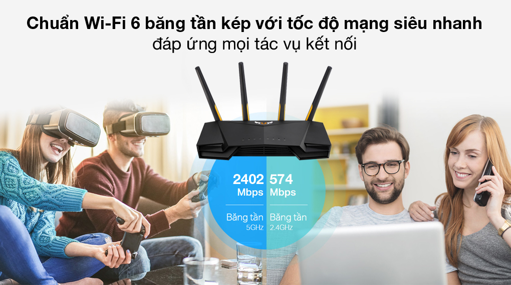
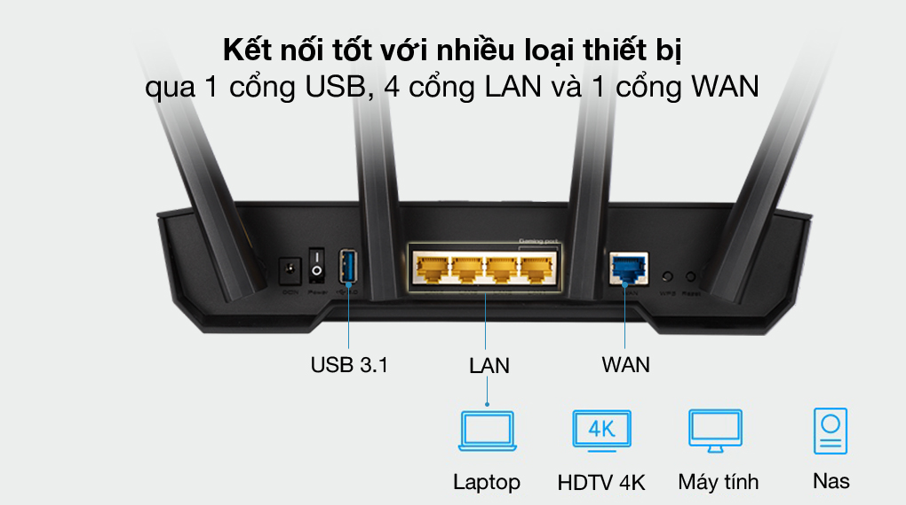
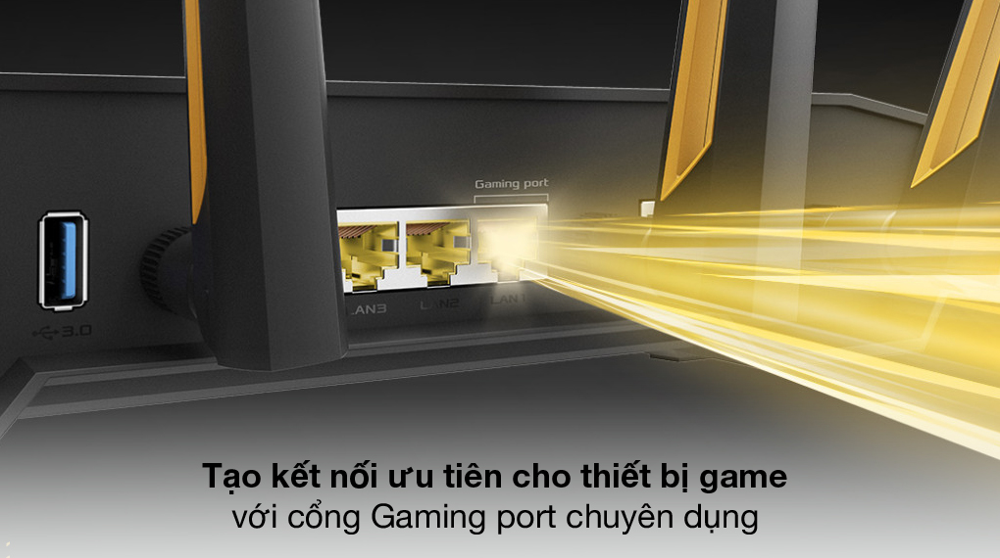
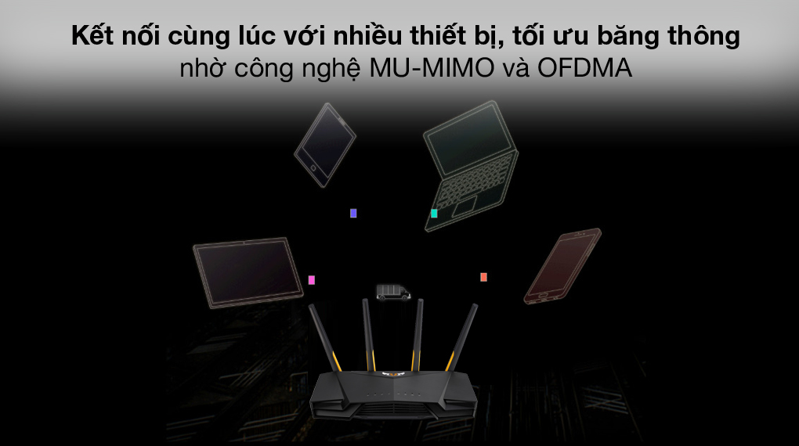
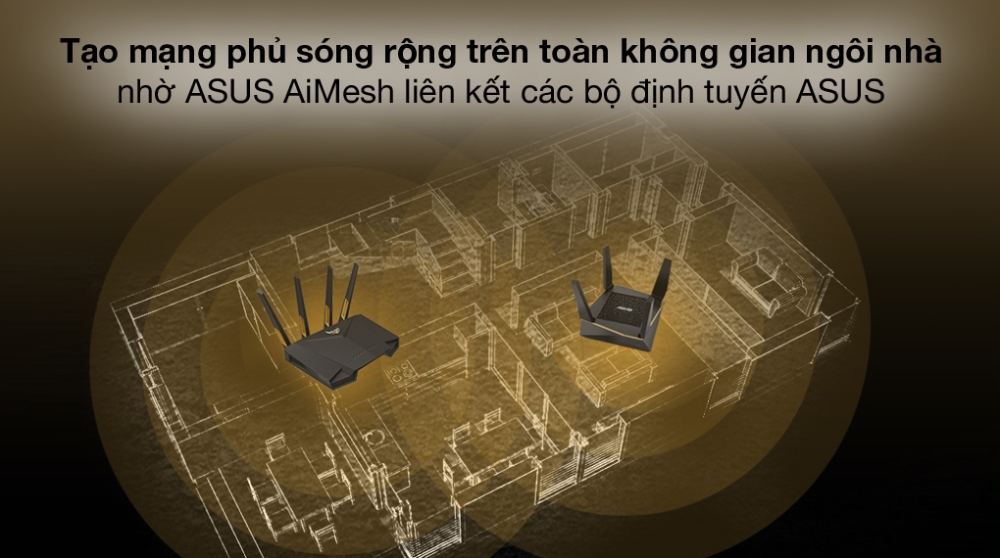
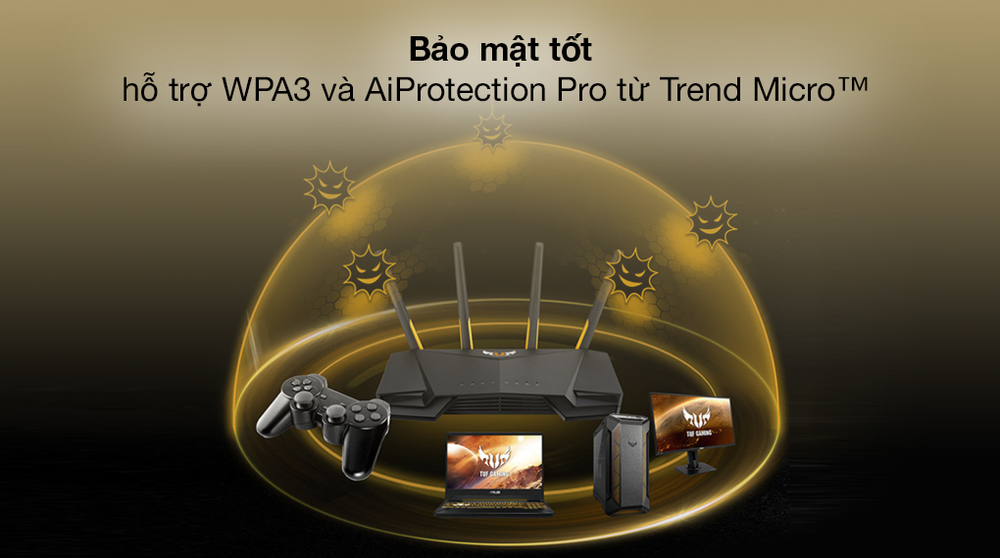
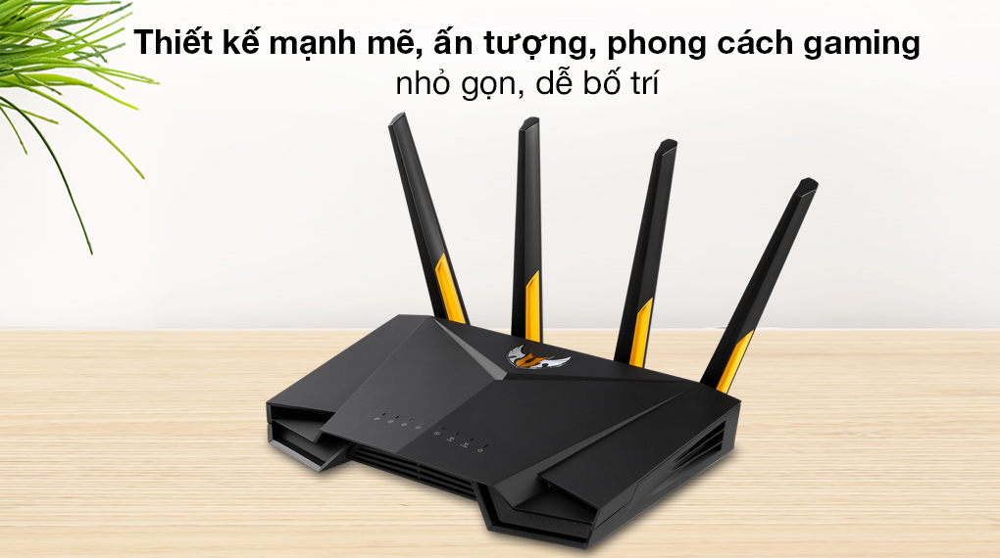

Bộ Phát Sóng Wifi Router Chuẩn Wifi 6 AX3000 Asus TUF-AX3000 Gigabit Đen

Đặc điểm nổi bật
- Hỗ trợ chuẩn WiFi mới nhất 802.11ax (WiFi 6) và băng thông 160 MHz cho dung lượng và hiệu quả tốt hơn.
- Tốc độ kết nối không dây lên tới 2402 Mbps trên băng tần 5 GHz và 574 Mbps trên băng tần 2.4 GHz.
- Phân bổ hiệu quả các kênh, giao tiếp với nhiều thiết bị cùng lúc với công nghệ MU-MIMO và OFDMA.
- Tương thích với hệ thống WiFi ASUS AiMesh để phủ sóng mượt toàn bộ ngôi nhà.
- Bảo mật tốt hơn, an toàn cao hơn với hỗ trợ WPA3 và AiProtection Pro.
- Hỗ trợ 1 cổng USB, 4 cổng LAN và 1 cổng WAN kết nối được với nhiều loại thiết bị.
Thông tin chi tiết
Chuẩn Wifi thế hệ thứ 6 802.11ax với tốc độ đường truyền siêu nhanh, ổn định
TRouter Asus TUF-AX3000 đạt tốc độ không dây lên tới 574 Mbps trên băng tần 2.4 GHz và 2402 Mbps trên băng tần 5 GHz, băng thông mạnh mẽ 160 MHz ấn tượng tạo các kết nối tức thì, mạnh mẽ và ổn định cho các thiết bị sử dụng mạng. Tốc độ đường truyền tốt hơn đến 2.5 lần so với chuẩn Wifi 802.11ac, mang đến trải nghiệm giải trí game online, xem phim trực tuyến, lướt web, xử lý công việc tốt hơn, hiệu suất cao hơn.
Kết nối đồng thời với nhiều thiết bị nhờ hỗ trợ 1 cổng USB, 4 cổng LAN và 1 cổng WAN
Hỗ trợ cổng LAN Gaming port chuyên dụng kết nối với các thiết bị chơi game để trở thành kết nối ưu tiên trên hệ thống mạng, cho phép trải nghiệm chơi game trực tuyến ổn định, không bị lag và gián đoạn.
Tạo mạng không dây độ dễ thấp trên nhiều thiết bị với công nghệ OFDMA và MU-MIMO
Với OFDMA và MU-MIMO, router dễ dàng chia sẻ tín hiệu mạng thành nhiều kênh nhỏ để phát tín hiệu đồng thời đến nhiều thiết bị kết nối, giúp truy cập cùng lúc dễ dàng, đồng thời giảm độ trễ rõ rệt, tận dụng tối ưu lượng băng thông khả dụng, cho hiệu suất sử dụng cao nhất. Router hỗ trợ tối đa 50 thiết bị truy cập, vùng phủ sóng rộng 20 m được kích hoạt tốt qua 4 ăng-ten 5 dBi.
Tạo mạng phủ sóng rộng trong không gian ngôi nhà nhờ ASUS AiMesh
ASUS AiMesh cho phép liên kết hiệu quả các bộ định tuyến ASUS để hình thành mạng wifi với độ phủ sóng rộng hơn, chuyển vùng liền mạch, để ở bất kỳ vị trí nào trong ngôi nhà bạn cũng có được kết nối internet hoàn hảo nhất từ hệ thống mạng tạo ra từ ASUS Router.
Hỗ trợ cài đặt AiProtection Pro, gia tăng bảo mật
Asus TUF-AX3000 hỗ trợ WPA3 để kết hợp các phương thức bảo mật mới nhất nhằm giữ an toàn cho tất cả người dùng trong hệ thống mạng. AiProtection Pro do Trend Micro cung cấp thường xuyên cập nhật tự động, giúp bảo vệ các thiết bị sử dụng mạng trong hệ thống trước các đe dọa bên ngoài, đặc biệt có lợi cho các thiết bị không thể cài đặt phần mềm chống virus như máy chơi game console, điện thoại thông minh và thiết bị IoT, tự do và an tâm trải nghiệm.
Thiết kế mạnh mẽ, ấn tượng theo phong cách gaming, nhỏ gọn dễ bố trí
Được chế tác theo chuẩn gaming, Asus TUF-AX3000 mang vẻ ngoài mạnh mẽ, độ bền được thử nghiệm vượt trội, cấu tạo vững chắc, ngoại hình thu hút dễ dàng bố trí cho nhiều vị trí và không gian.
Với lựa chọn Bộ Phát Sóng Wifi Router Chuẩn Wifi 6 AX3000 Asus TUF-AX3000 Gigabit Đen, bạn sẽ tạo cho mình một hệ thống mạng không dây linh hoạt, mạnh mẽ và thuận tiện, tối ưu hóa trên mọi trải nghiệm.
Thông số kỹ thuật Router Wifi Mesh 3 Pack AC1300 TP-Link Deco M5 Trắng
-
Tốc độ:
2402 Mbps (băng tần 5GHz) 574 Mbps (băng tần 2.4GHz) -
Băng tần:
2.4GHz & 5GHz -
Số ăng-ten:
4 ăng ten 5dBi -
Truy cập tối đa:
50 user -
Mật độ phủ sóng (bán kính):
20 m -
Các cổng kết nối:
1 x USB 3.11 x WAN4 x LAN -
Nút bấm hỗ trợ:
1 nút Reset1 nút WPSNút Mở/Tắt nguồn -
Thương hiệu của:
Đài Loan -
Sản xuất tại:
Trung Quốc -
Hãng
Asus